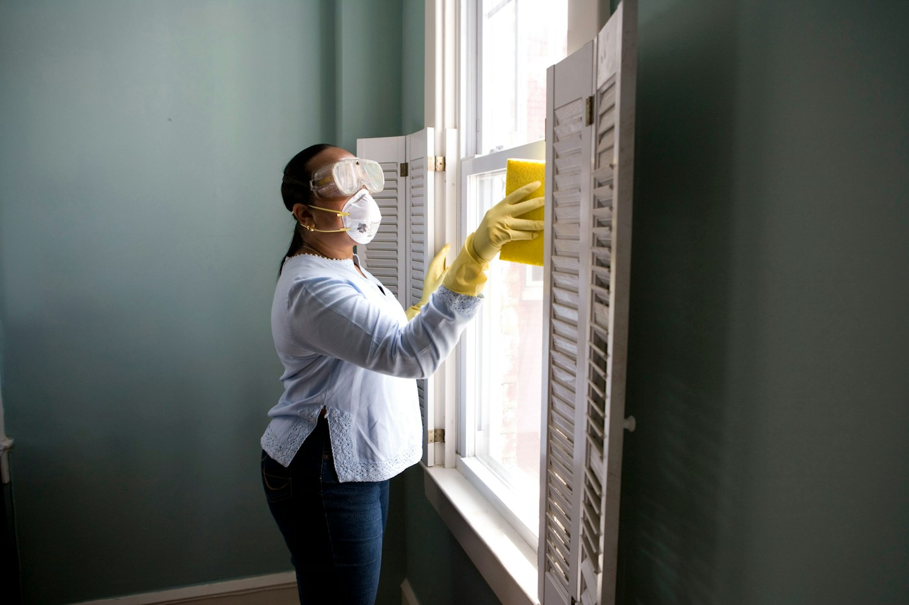

The everyday calm
From $120 / visit
Recurring care for a home that feels a little lighter. Weekly, every other week, or monthly.
- Kitchen surfaces & appliance exteriors
- Bathrooms, floors & dusting
- Bins emptied, finishing touches
A FRESH START, EVERY TIME.
Thoughtful cleaning for the busy days, the slow Sundays, and everything your home holds in between.
Find your fresh start ↗WILMINGTON & THE NEARBY COAST

01 / FIND YOUR RHYTHM
Start with the kind of reset you need. These sample rates help set expectations; a real quote would follow a conversation about your space.
From $120 / visit
Recurring care for a home that feels a little lighter. Weekly, every other week, or monthly.
From $220 / visit
A more detailed, one-time refresh. Lovely for a seasonal reset or a first visit.
From $280 / visit
Move-in and move-out care for an empty home, ready for whatever comes next.
02 / THE SALT & SAGE WAY
We imagined Salt & Sage around a simple feeling: walking through the door and letting your shoulders drop. Care should feel personal, from the first conversation to the final straightened cushion.
Tell us about your space, your priorities, and the places that need a little extra love.
Agree on the scope, sample price, and access details before a visit is scheduled.
In a live service, a simple checklist would keep every visit consistent and easy to review.
03 / A FEW HELPFUL DETAILS
The imagined service area includes Wilmington, Leland, and Wrightsville Beach. All locations are illustrative; this portfolio concept is not accepting real bookings.
Standard supplies would be included. Any surface-specific products, allergies, or fragrance preferences would be discussed before a visit. No claim is made that products are allergen-free.
No exterior windows, high ladders, mold or biohazard remediation, pest cleanup, or heavy lifting. Specialty needs should go to an appropriate provider.
A live service would agree on a safe access plan in advance. Please never enter keys, alarm codes, or other sensitive access details into this demo form.
04 / A LITTLE LESS TO DO
Get a sample starting estimate and explore your next step. No surprise messages, no real booking.
Wilmington, North Carolina
Concept service area · no public office
Mon–Fri 8:30–5:00 · Sat by arrangement
hello@saltandsage.example
(252) 555-0110 · fictional